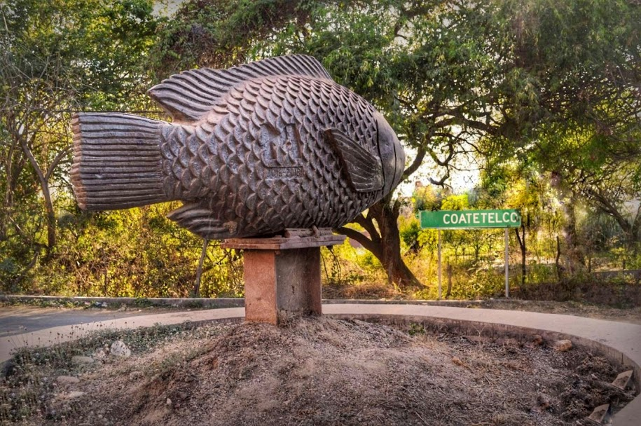
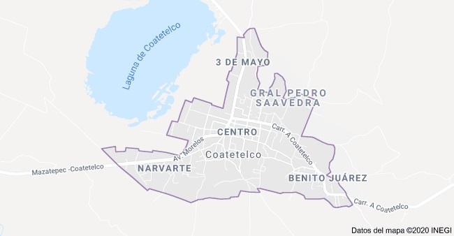
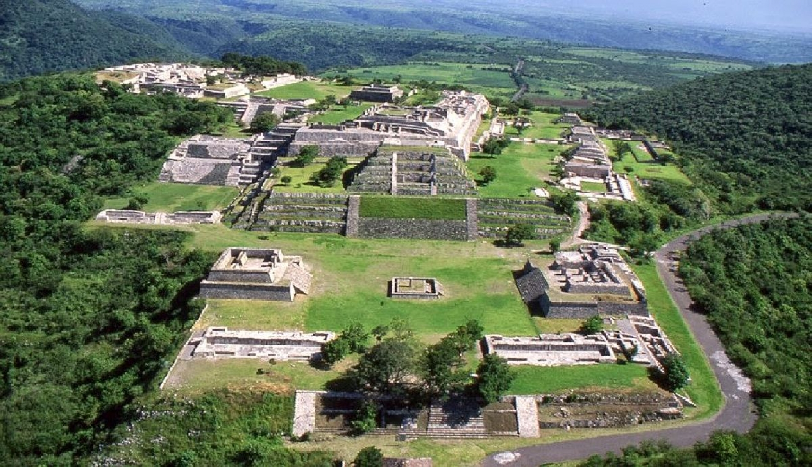
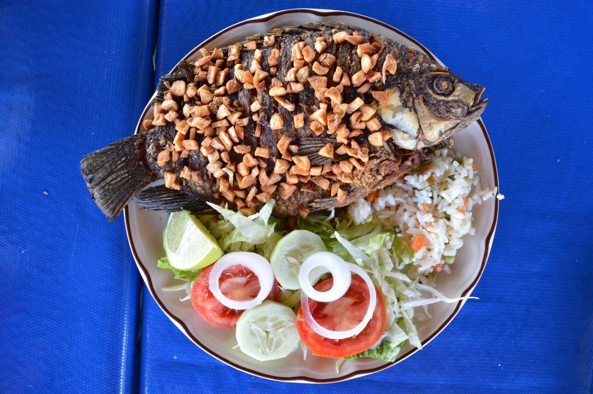
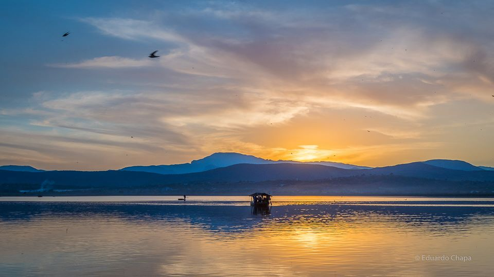
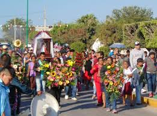
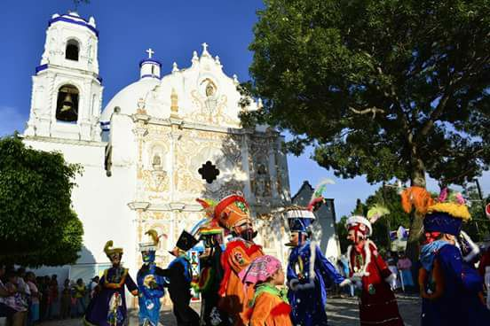
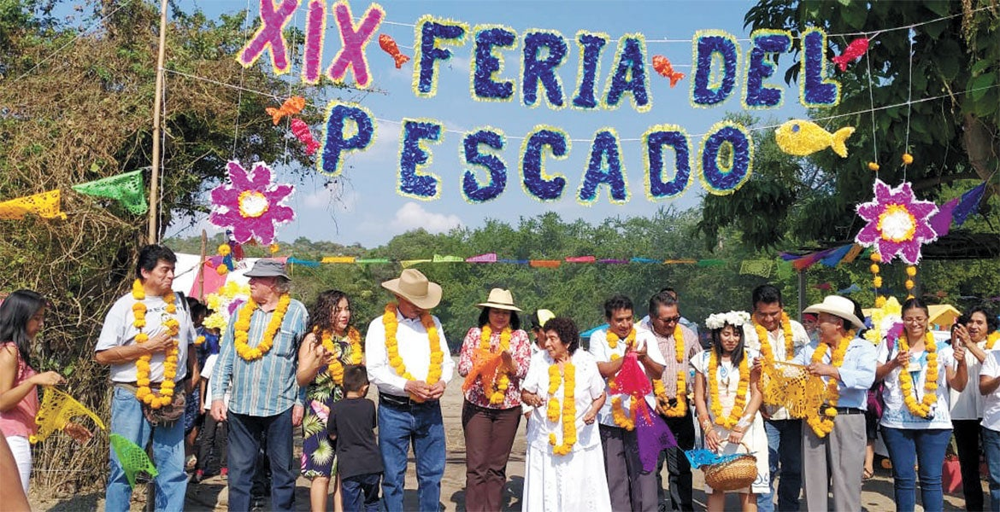

"Lugar de las serpientes en los montículos de piedra”, según varios historiadores, así se le conoció. Hoy Coatetelco se define por su exquisita gastronomía, bellos paisajes naturales, historia, costumbres y tradiciones.

¿CÓMO LLEGAR?
Esta ubicado al surponiente de Morelos, Desde Cuernavaca, se toma la carretera Núm. 95 (México-Acapulco),hasta llegar a la desviacion a Alpuyeca-Coatetelco. Tiene acceso por la carretera Alpuyeca-Miacatlan o Alpuyeca-Puente de Ixtla, se encuemtra a 38Km de distancia de la capital morelense.

¿QUÉ PODEMOS HACER?
Puedes visitar la zona arqueologica que se encuentra ubicada en el centro de Coatetelco.
Aqui un poco de introduccion a la historia de la zona arqueologica:
Coatetelco fue edificado a la orilla del lago del mismo nombre. Es un sitio vinculado con Xochicalco, aunque su periodo más importante se dio hacia el Preclásico Tardío. Después de la hegemonía de Xochicalco, Coatetelco retoma importancia y pasa a ser el centro regional más importante. Para el Posclásico el vínculo con Tula se evidencia con la presencia de un Chac Mool. Cronología: 500 a. C. a 1500 d. C. Ubicación cronológica principal: Posclásico Temprano, 900 a 122.

Aqui un video que nos muestra mas imagenes sobre la zona arqueologica...
Tambien puedes visitar la laguna de Coatetelco, disfrutar sus diversos platillos gastronomicos y tradicionales, en la que el pescado es el ingrediente principal acompañada de sus exquisitos sopes.

Al terminar de degustar los platillos, puedes ir de paseo en una lancha, recorriendo la laguna y disfrutando un espectacular atardecer.

Aqui un video explicando mas a fondo sobre la laguna...
Ahora hablaremos de nuestras costumbres y tradiciones...
Hablaremos de las ferias y que se que se hacen cada año en este pueblo...
En primer lugar se encuentra la feria patronal de la virgen de la candelaria.
Esta feria tradicional se lleva a cabo una semana y media antes del 2 de febrero, lo primero que se hace es ir por la virgen que se encuentra en el poblado de tetecala, se va por ella dias antes de su festividad en un horario de 5 de la mañana, lo creyentes hacen un recorrido de un aprox. de 9.5 km, por ella van muchas danzas indigenas que fueron dejando nuestros ancestros, tiempo despues se hace la fiesta a la virgen, a la vigen le llevan ofrendas que son acompañadas de algunas danzas, esta festividad termina el dia 1 de febrero yendo a dejar de vuelta a la virgen a tetecala.

Ahora hablaremos de la feria que le celebran al santo patron del pueblo...
Los feligreses de la comunidad indígena de Coatetelco festejan cada año su fiesta patronal en honor a San Juan Bautista, que inicia la noche del 23 de junio en la iglesia, llevandole promesas de flores, un huentle con mole verde acompañadas con las danzas tradicionales, etc, el fin de esta festividad termina una semana despues.

Y la ultima pero no menos importante es la feria del pescado...
Esta celebración se celebra el ultimo fin de semana de noviembre, se ofrece un ritual a la madre naturaleza, la tierra, el agua (la laguna de la comunidad) y el aire, en agradecimiento por la buena cosecha, por lo que es una demostración de rituales y cultura en general del pueblo de Coatetelco, donde se da a conocer la gastronomía del lugar, danzas tradicionales y la preservación de la ofrenda a los airecitos y la madre naturaleza.

Te mostrare la siguiente tabla, la cual nos dice que tan concurrente son las ferias en este municipio indigena:
ESTADISTICAS DE VISITANTES A LAS FERIAS DEL PUEBLO DE COATETELCO
TIPO DE FERIA
PUBLICO EXTERNO
PUBLICO LOCAL
VIRGEN DE LA CANDELARIA
15% DE PUBLICO
70% DE PUBLICO
SAN JUAN BAUTISTA
15% DE PUBLICO
85% DE PUBLICO
FERIA DEL PESCADO
45% DE PUBLICO
55% DE PUBLICO
Para finalizar les mostrare otra costrumbre y tradicion que se encuentra en este hermoso pueblo el dia de los muertos en Coatetelco...
esta tradición viene desde la época prehispánica, ya que los antepasados siempre respetaron a los muertos; como parte de ello, ofrecían pan, chocolate y mole verde con tamales de masa blanca “a aquellos que se han adelantado en el camino de la vida dando paso a la muerte”; “Son bastantes aún las familias que siguen poniendo estas ofrendas en su Huatlapechtle: es decir, una base de carrizo verde envuelto con hojas de plátano y colgada sobre la viga del techo de las casas. Otros ya la ponen en mesa, pero igual la tradición de celebrar a los difuntos es una de las más características de la comunidad”; Los habitantes instalan las ofrendas desde el 31 de octubre para recibir las almas de los menores de 15 años; todos los recipientes de los alimentos deben de ser de barro, pequeños y nuevos, como parte de la costumbre de los lugareños.
Esta ofrenda debe contar con 12 cazuelas pequeñas de barro con mole verde, cada una con una pieza de gallina, 12 jarros con chocolate en agua, 12 panes, tamales de masa blanca (sin importar la cantidad de ellos), fruta (manzana, naranja, plátano macho, ciruelas, mandarinas, etc.), pan, calabaza en dulce, tablillas de chocolate criollo y seis floreros de barro (uno en cada esquina de la base colgante, otro más en el centro y uno debajo de la base colgante), todos con cempasúchil, además de velas, veladoras, agua y sal.
En algunos casos también acostumbran colocar juguetes, ropa para niño o alguna imagen según la tradición de cada familia. los 12 alimentos y recipientes que debe tener la ofrenda colgante para las almas de los niños corresponden a la creencia de los antepasados, ya que en la época prehispánica consideraban seis puntos cardinales: norte, sur, nororiente, surponiente, cielo y tierra; además de los cuatro elementos –agua, aire, tierra y fuego– así como los dos encuentros entre muertos y vivos y viceversa. los 12 alimentos y recipientes que debe tener la ofrenda colgante para las almas de los niños corresponden a la creencia de los antepasados, ya que en la época prehispánica consideraban seis puntos cardinales: norte, sur, nororiente, surponiente, cielo y tierra; además de los cuatro elementos –agua, aire, tierra y fuego– así como los dos encuentros entre muertos y vivos y viceversa.